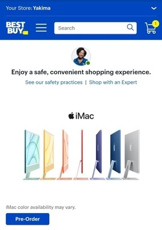

Best Buy
Website Link I feel this design principle is exemplified on this page very well. The first thing that I notice on the page, is the image of the macs. This image draws my attention to the product they are trying to sell. The next thing I see, which is also the next item in the hierarchy, is the button to buy the pictured item.